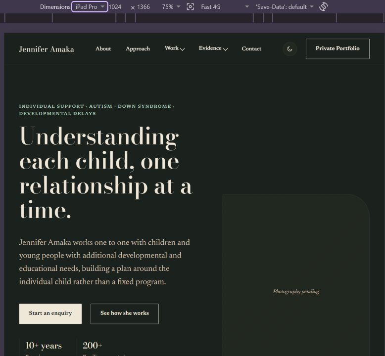
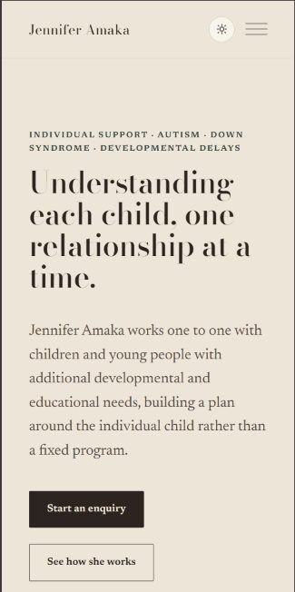

Business · Client build · In development
Teaching Portfolio
A quiet, editorial portfolio site for Jennifer Amaka, a specialist who works one to one with children and young people with autism, Down syndrome, and other developmental delays, building a plan around each child rather than a fixed program.

The challenge
Parents landing on this page are often anxious and looking for reassurance, not a sales pitch. The site had to feel calm, credible, and human first, and only then get into the specifics of the work, without ever feeling clinical or cold.
The approach
Structured the site around About, Approach, Work, Evidence, and Contact, so a visitor can move from "who is this person" to "how do they work" to "what's the proof" at their own pace, with a gated Private Portfolio area kept separate from the public case history.
Design
A warm, editorial serif headline over a soft neutral palette (cream in light mode, near-black in dark mode), built to feel like a considered personal practice rather than a template, with a light/dark toggle carried across every page.
Development
Plain HTML with a hand-built CSS system (separate tokens, base, components, and premium-polish stylesheets) plus hand-written JavaScript, structured across About, Approach, a Work section with dropdown navigation, an Evidence section for credibility markers, and Contact, all responsive from phone through iPad-sized tablets to desktop.
What I solved
- A tone that reads as reassuring and credible on the very first screen, not just further down the page.
- A dropdown-based Work and Evidence navigation structure that organizes case history without overwhelming a first-time visitor.
- A gated Private Portfolio link, separate from the public-facing pages, for sensitive case material.
- A light/dark theme toggle and fully responsive layout, tested down to tablet breakpoints.
Where it stands
It's live at justixxprime.github.io/teaching-portfolio, and still being built out page by page, with real photography and evidence content being added as it becomes available. The structure and design system are locked in; what's left is mostly filling it with the client's real material.
Screens

